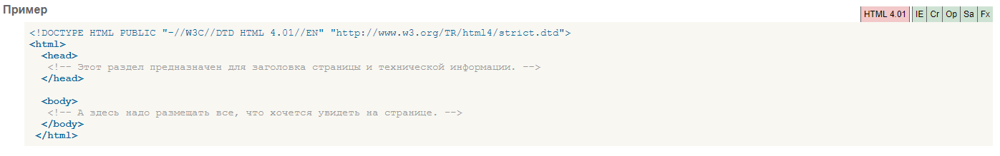

Тег -head-
предназначен для храненlия других элементов, цель которых — помочь браузеру в работе с данными.
Также внутри контейнера -head- находятся метатеги, которые используются для хранения информации предназначенной для браузеров и поисковых систем.
Например, механизмы поисковых систем обращаются к метатегам для получения описания сайта, ключевых слов и других данных.
Содержимое тега -head- не отображается напрямую на веб-странице, за исключением тега -title- устанавливающего заголовок окна веб-страницы.
Внутри контейнера -head- допускается размещать следующие элементы: -base-, -basefont-, -bgsound-, -link-, -meta-, -script-, -style-,
-title-.
